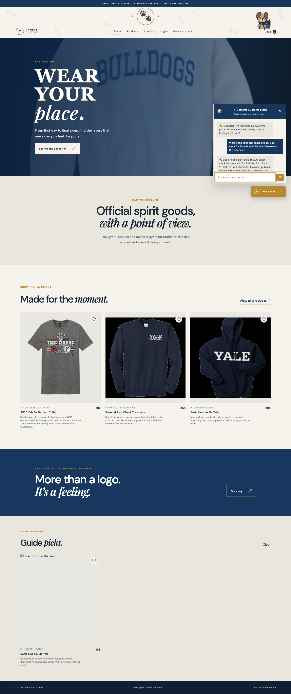
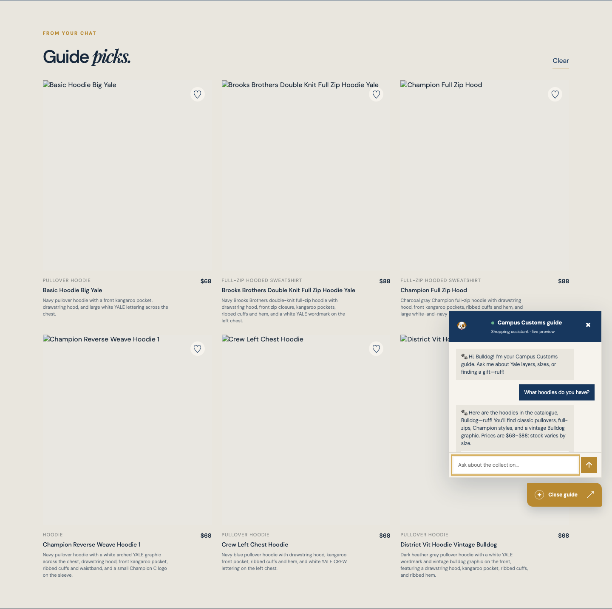
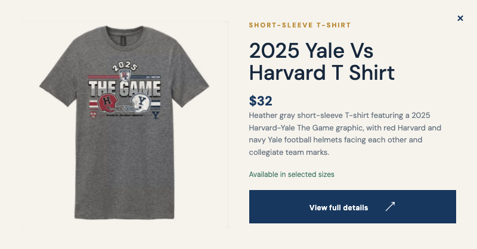

Live check completed against the Vite frontend at http://127.0.0.1:5173/ and FastAPI at http://127.0.0.1:8000/. The interactions were run with browser automation, and the screenshots below are the captured states.
Result: PASS. The API health check passed, the frontend loaded, chat returned database-backed information, category search produced product cards, and Problem 9 Quick View opened successfully. The frontend production build also passed with npm run build.
1. Chat inventory and price check
Question tested: “What is the price and exact size-by-size stock for Basic Hoodie Big Yale? Please use the database.”
Database result: $68.00.
Size-level stock: XS 15, S 5, M 5, L 8, XL 2, XXL 25; total 60.
Observed behavior: The guide returned the exact price and every inventory quantity, identified the database-backed stock as current, and did not invent availability.

Figure 1. The live chat gives an honest $68 price and exact size-by-size stock for Basic Hoodie Big Yale from the SQLite catalogue and inventory tables.
2. Dynamic category search cards
Question tested: “What hoodies do you have?”
Observed behavior: The chat response populated the page-level Guide picks section with six catalogue-backed product cards.
Returned cards: Basic Hoodie Big Yale; Brooks Brothers Double Knit Full Zip Hoodie Yale; Champion Full Zip Hood; Champion Reverse Weave Hoodie 1; Crew Left Chest Hoodie; District Vit Hoodie Vintage Bulldog.
The test also covered the natural plural “hoodies”; the catalogue search normalizes that category request to the real “hoodie” records.

Figure 2. Asking about hoodies dynamically adds six matching product cards to the page, with the catalogue image, name, price, and short information available to the shopper.
3. Problem 9 usability feature: Quick View
Interaction tested: Open Products, click the first product’s Quick view control, and confirm the modal appears.
Observed product: 2025 Yale Vs Harvard T Shirt.
Observed price: $32.
The modal includes the product image, category, description, price, availability summary, close control, and a button to continue to full details. Product cards remain clickable for the single-item view.

Figure 3. Problem 9 Quick View opens directly from the Products page so shoppers can inspect an item without losing their place.
Interaction and accessibility notes
The tested controls use real buttons and inputs, product cards support click and keyboard activation, the modal has dialog semantics and a close control, and the site includes visible focus styling. Decorative motion is disabled when reduced motion is requested. The live test also found and corrected plural category matching for “hoodies” before the final screenshots were captured.